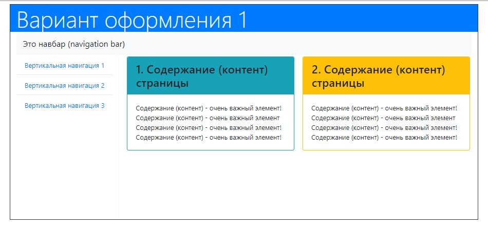

Создание Vinci-модели сайта
После создания проекта нам необходимо создать файл модели. Мы уже знаем, что файл модели имеет расширение .vinci, хранится либо в корневой папке проекта либо в дочерних папках (поддирректориях). Процесс создания модели уже рассматривался во второй лекции, но не полностью - мы не затронули процесс выбора шаблона оформления для нашего сайта.
Поэтому рассмотрим процесс создания модели еще раз:
Для того чтобы создать файл модели выделяем корневой каталог (папку) проекта -> ПКМ -> New -> Other
В открывшемся диалоговом окне выбраем мастер создания модели. Прокручиваем вниз, находим папку Nasdanika -> раскрываем папку -> выделяем Vinci Model -> Next
По умолчанию модель называется My.vinci. Присвойте модели новое имя, при этом я рекомендую использовать латиницу и название должно быть без пробелов между словами.
Потому что потом из этого названия генератор создаст папку и в неё будут сгенерированы HTML файлы сайта. Затем, название этой папки станет частью URL-адреса, по которому мы будем образаться к страницам сайта. А URL-адрес не должен содержать пробелов.
Далее мы выбираем корневой объект модели. Мы будем строить модель от элемента, который называется Action (Построение модели от других объектов используется, например, для создания шаблонов оформления и будет рассматриваться в курсах более высокого уровня).
В диалоговом окне мы видим список тех объектов, от которых мы можем построить модель. Нажмем на стрелочку рядом с пунктом списка Actions. Раскроется список, в котором мы выберем пункт Action.
Затем, мы можем нажать кнопку Next и перейти к выбору настроек оформления для сайта. Либо можем нажать кнопку Finish и использовать предустановленные настройки оформления
Переходим к следующему диалоговому окну, в котором мы будем настраивать внешний вид нашего сайта. Мы должны указать генератору: какую тему оформления использовать для страниц сайта: базовую тему Bootstrap (Default) или Bootswatch тему Cerulian (что значит - лазурный).
Тема оформления определяет: какие цветовые оттенки будут использоваться для оформления отдельных элементов сайта.
В прогрмму встроено 4 варианта оформления, которые получаются в результате комбинации светлого/тёмного хедера и светлой/темной навигационной панели.
Для того чтобы использовать другие цветовые темы необходимо научиться подключать шаблоны оформления к модели.
Выбираем цвет хедера (шапки страницы) темный, а навигационную панель - светлую.
Установим галочку fluid. Эта галочка отвечает за то, что содержимое сайта будет занимать 100% от окна браузера. Если я она не будет установлена, то содержимое сайта будет собираться в центре страницы.
Нажимаем кнопочку finish. В области Model explorer появится файл модели, а в области редактирования открывается древовидная репрезентация модели.
Доступные бесплатные варианты оформления:
